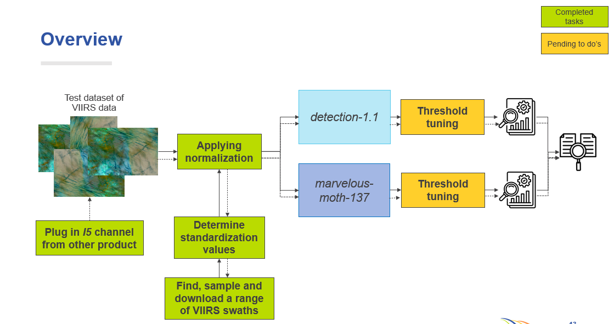

Walkthroughs
Step-by-step walkthroughs tracing how general principles, algorithms, and pipelines work — from data input through model inference to evaluation.

VIIRS contrail detection pipeline
A node-by-node walkthrough of the full inference pipeline: VIIRS band mapping from M15/I5 channels to the ABI input format, normalization, model forward pass, and prediction output. M15 and I5 paths are shown in parallel throughout.

Fine-tuning the segmentation head
Step-by-step walkthrough of the four-phase fine-tuning pipeline: extract frozen MAnet encoder–decoder features, check linear separability via PCA, train only the segmentation head with focal loss, and evaluate on validation scenes with PR/ROC curves. M15 and I5 normalization paths shown in parallel.
How neural networks detect contrails
A conceptual guide to semantic segmentation, encoder–decoder architectures, attention gates, focal loss, and inference thresholding — with visual diagrams, minimal code, and maximal intuition. Covers ResNet-18, MAnet, and the training pipeline from first principles.